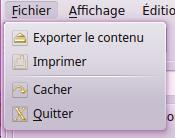
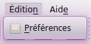
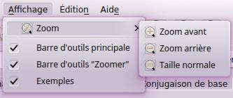
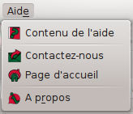
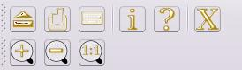
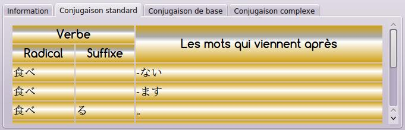
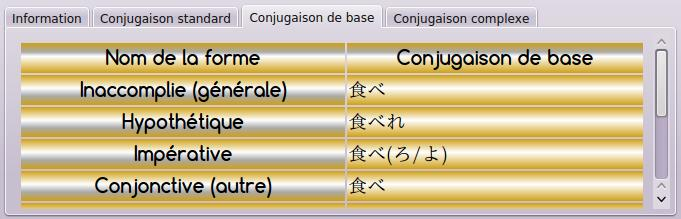
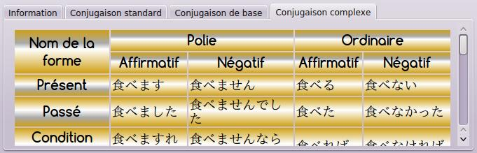

Cette application offert une interface utilisateur facile à utiliser. Elle est conçu pour aider l'utilisateur à conjuguer les verbes japonais et faire d'autres choses de manière simple. L'application contient cinq parties:
En outre, l'interface utilisateur est traduite en d'autres langues que le français: arabe, anglais, japonais.
Il contient des fonctionnalités spécifiques pour les données telles que l'impression ou l'exportation des tableaux de résultats.

Il contient des fonctionnalités d'édition, telles que les préférences.

Il contient des fonctionnalités spécifiques pour la présentation de l'application tels que Zoom,
et les bars et des panneaux à montrer.

Il contient cette aide et des informations sur l'application.

Les barres d'outils sont utilisés pour accéder facilement aux fonctions, qui sont situés dans la barre de menus.

Ici, vous pouvez entrer le verbe japonais que vous souhaitez conjuguer. Le verbe d'entrée doit atteindre certaines conditions:
Le résultat contient trois tableaux:
L'application vous donne des informations sur le verbe d'entrée.
Si le verbe n'existe pas dans la base de données, elle vous affiche un message disant ça.
Sinon, elle vous indique le type de verbes.
Ceci est un liste de la plupart des types importants de verbes:
Elle est utilisée par les Japonais pour apprendre la conjugaison des verbes.

Elle montre les radicaux de base: a e u i o plus la forme t.

Elle montre certaines formes complexes, qui sont originaires des radicaux de base suivis par des suffixes.
